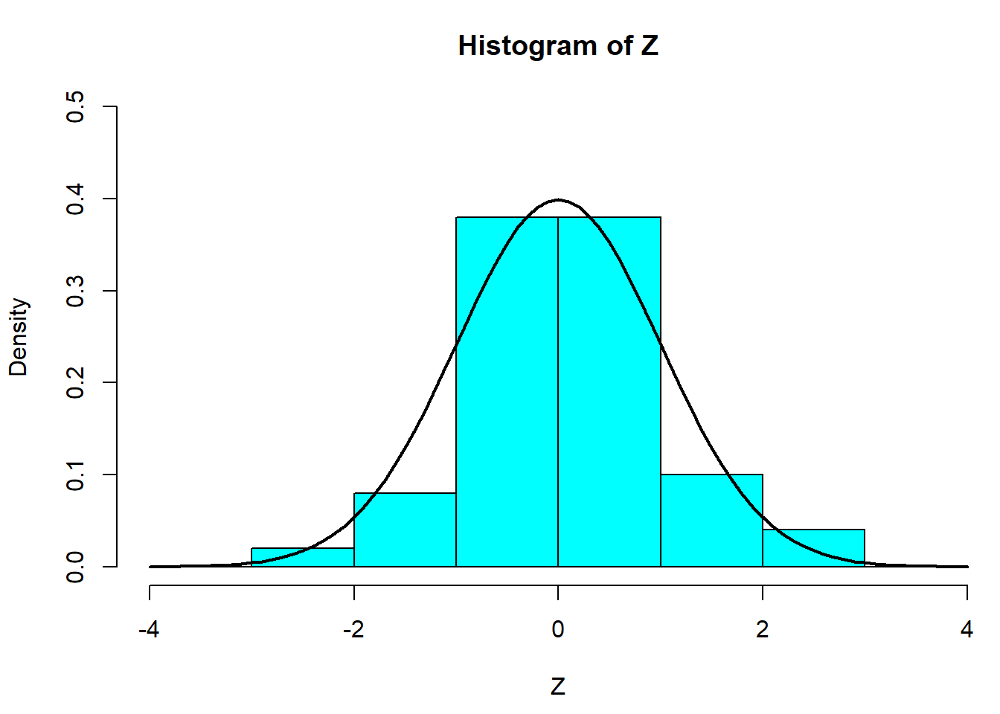
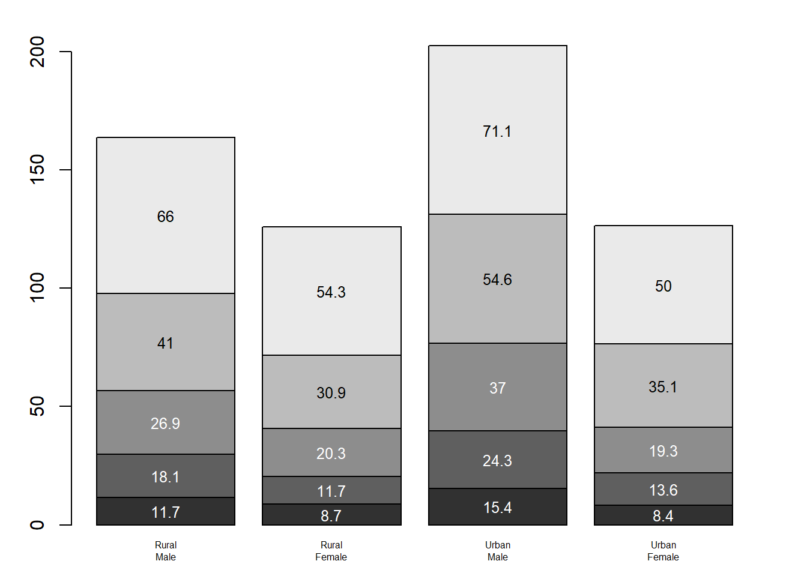

plot(pressure, pch=16)
text(150, 600,
"Pressure (mm Hg)\nversus\nTemperature (Celsius)")
par(mfrow=c(3, 2))
new_x <- c(0.5, 2, 4, 8, 12, 16)
new_y1 <- c(1, 1.3, 1.9, 3.4, 3.9, 4.8)
new_y2 <- c(4, .8, .5, .45, .4, .3)Change pch change the shape of the data points.
plot(pressure, pch=16)
text(150, 600,
"Pressure (mm Hg)\nversus\nTemperature (Celsius)")
par(mfrow=c(3, 2))
new_x <- c(0.5, 2, 4, 8, 12, 16)
new_y1 <- c(1, 1.3, 1.9, 3.4, 3.9, 4.8)
new_y2 <- c(4, .8, .5, .45, .4, .3)Change cex change size of the points, bg, color of the points, fg, color of the axis
par(las=1, mar=c(4, 4, 2, 4), cex=0.8)
plot.new()
plot.window(range(new_x), c(0, 6))
lines(new_x, new_y1)
lines(new_x, new_y2)
points(new_x, new_y1, pch=17, cex=6) # Increased point size with a different shape
points(new_x, new_y2, pch=19, bg="green", cex=3) # Different background color and size
par(col="purple", fg="gray40", col.axis="darkgreen")
axis(1, at=seq(0, 16, 4)) # X-axis, min, max, gap
axis(2, at=seq(0, 6, 2))
axis(4, at=seq(0, 6, 2))
box(bty="o") # Changed box type
mtext("Time (s)", side=1, line=2, cex=1)
mtext("Frequency", side=2, line=2, las=0, cex=1)
mtext("Velocity", side=4, line=2, las=0, cex=1)
text(6, 4, "Sample Label")par(mar=c(5.1, 4.1, 4.1, 2.1), col="black", fg="black", col.axis="black")Z <- rnorm(50)
# Ensure no Z exceeds [-4, 4]
Z[Z < -4 | Z > 4] <- NA # Selection/set range
x_vals <- seq(-4, 4, .1)
density_vals <- dnorm(x_vals)
par(mar=c(4.5, 4.1, 3.1, 0))
hist(Z, breaks=seq(-4, 4), ylim=c(0, 0.5),
col="cyan", freq=FALSE)
lines(x_vals, dnorm(x_vals), lwd=2)
par(mar=c(2, 3.1, 2, 2.1)) Margin of the plot: Bottom, Left, Top, Right
col=gray(0.1 + seq(1, 9, 2)/11) Shade of grey from 1/11, 3/11, 5/11, 7/11, 9/11
names=rep(““, 4)) –> Change x-axis to be empty –> Use mtext to create customized label
text(rep(midpts, each=5), apply(VADeaths, 2, cumsum) - VADeaths/2 midpts, each=5 # Position of each text from the bars
text(rep(midpts, each=5), apply(VADeaths, 2, cumsum) - VADeaths/2 –> Calculate the culmulative sums of death
par(mar=c(2, 3.1, 2, 2.1))
mid_points <- barplot(VADeaths,
col=gray(0.1 + seq(1, 9, 2)/11),
names=rep("", 4))
mtext(sub(" ", "\n", colnames(VADeaths)),
at=mid_points, side=1, line=0.5, cex=0.5)
text(rep(mid_points, each=5), apply(VADeaths, 2, cumsum) - VADeaths/2,
VADeaths,
col=rep(c("white", "black"), times=3:2),
cex=0.8)
par(mar=c(5.1, 4.1, 4.1, 2.1))Boxwex = Boxwidth at= Change position Subset = Subset of data
boxwex = 0.25, at = 1:3 - 0.2, subset= supp == “VC”, col=“white”, xlab=““, ylab=”tooth length”, ylim=c(0,35))
par(mar=c(3, 4.1, 2, 0))
boxplot(len ~ dose, data = ToothGrowth,
boxwex = 0.3, at = 1:3 - 0.25,
subset = supp == "VC", col = "lightblue",
xlab = "",
ylab = "Tooth Length", ylim = c(0, 35))
mtext("Vitamin C Dose (mg)", side = 1, line = 2.5, cex = 0.8)
boxplot(len ~ dose, data = ToothGrowth, add = TRUE,
boxwex = 0.3, at = 1:3 + 0.25,
subset = supp == "OJ", col = "lightgreen")
legend(1.5, 9, c("Ascorbic Acid", "Orange Juice"),
fill = c("lightblue", "lightgreen"),
bty = "n")par(mar=c(5.1, 4.1, 4.1, 2.1))1.z <- outer(x, y, f) Compute the value of function of x,y and store the value as z And adjusted all missing value of z -1
2.f <- function(x,y) { r <- sqrt(x2+y2); 10 * sin(r)/r } First derived the distance between x and y by r Then calculate a function of x y by the fraction 10 * sin(r)/r
x_vals <- seq(-12, 12, length = 30)
y_vals <- x_vals
f <- function(x, y) { r <- sqrt(x^2 + y^2); 12 * sin(r) / r }
z_vals <- outer(x_vals, y_vals, f)
z_vals[is.na(z_vals)] <- 1
# Adjusting for z-axis label visibility
par(mar = c(0, 0.5, 0, 0), lwd = 0.5)
persp(x_vals, y_vals, z_vals, theta = 35, phi = 25,
expand = 0.5)Can use other type of color pie(pie.sales, col = rainbow(6)) pie(pie.sales, col = heat.colors(6))
par(mar=c(0, 2, 1, 2), xpd=FALSE, cex=0.6)
pie_sales <- c(0.15, 0.25, 0.2, 0.18, 0.05, 0.17)
names(pie_sales) <- c("Strawberry", "Lemon", "Apple", "Chocolate", "Other", "Vanilla")
pie(pie_sales, col = gray(seq(0.2, 1.0, length=6)))library(readxl)
library(tidyverse)── Attaching core tidyverse packages ──────────────────────── tidyverse 2.0.0 ──
✔ dplyr 1.1.4 ✔ readr 2.1.5
✔ forcats 1.0.0 ✔ stringr 1.5.1
✔ ggplot2 3.5.1 ✔ tibble 3.2.1
✔ lubridate 1.9.3 ✔ tidyr 1.3.1
✔ purrr 1.0.2
── Conflicts ────────────────────────────────────────── tidyverse_conflicts() ──
✖ dplyr::filter() masks stats::filter()
✖ dplyr::lag() masks stats::lag()
ℹ Use the conflicted package (<http://conflicted.r-lib.org/>) to force all conflicts to become errorshpi_data <- read_excel("HPI_2024_public_dataset.xlsx", sheet = "All Data", skip = 1)Warning: Expecting numeric in A2436 / R2436C1: got 'Coefficients used'Warning: Expecting numeric in A2444 / R2444C1: got 'Year by year data'Warning: Expecting numeric in G2444 / R2444C7: got 'Means'Warning: Expecting numeric in L2444 / R2444C12: got 'Stdevs'Warning: Expecting numeric in Q2444 / R2444C17: got 'CoVs'Warning: Expecting numeric in D2445 / R2445C4: got 'Scale up factor for year'Warning: Expecting numeric in E2445 / R2445C5: got 'Global Pop'Warning: Expecting numeric in G2445 / R2445C7: got 'LifeExp'Warning: Expecting numeric in H2445 / R2445C8: got 'Ladder'Warning: Expecting numeric in I2445 / R2445C9: got 'Carbon'Warning: Expecting numeric in J2445 / R2445C10: got 'Adj Lad x Life Exp'Warning: Expecting numeric in L2445 / R2445C12: got 'LifeExp'Warning: Expecting numeric in M2445 / R2445C13: got 'Ladder'Warning: Expecting numeric in N2445 / R2445C14: got 'Carbon'Warning: Expecting numeric in Q2445 / R2445C17: got 'LifeExp'Warning: Expecting numeric in R2445 / R2445C18: got 'Ladder'Warning: Expecting numeric in U2445 / R2445C21: got 'Carbon'Warning: Expecting logical in V2445 / R2445C22: got 'Adj Lad x Life Exp'Warning: Expecting logical in X2446 / R2446C24: got 'A'Warning: Expecting logical in Y2446 / R2446C25: got 'Year_lookup!A1:A2'Warning: Expecting logical in X2447 / R2447C24: got 'B'Warning: Expecting logical in Y2447 / R2447C25: got 'Year_lookup!B1:B2'Warning: Expecting logical in X2448 / R2448C24: got 'C'Warning: Expecting logical in Y2448 / R2448C25: got 'Year_lookup!C1:C2'Warning: Expecting logical in X2449 / R2449C24: got 'D'Warning: Expecting logical in Y2449 / R2449C25: got 'Year_lookup!D1:D2'Warning: Expecting logical in X2450 / R2450C24: got 'E'Warning: Expecting logical in Y2450 / R2450C25: got 'Year_lookup!E1:E2'Warning: Expecting logical in Y2451 / R2451C25: got 'Year_lookup!F1:F2'Warning: Expecting logical in X2452 / R2452C24: got 'G'Warning: Expecting logical in Y2452 / R2452C25: got 'Year_lookup!G1:G2'Warning: Expecting logical in X2453 / R2453C24: got 'H'Warning: Expecting logical in Y2453 / R2453C25: got 'Year_lookup!H1:H2'Warning: Expecting logical in X2454 / R2454C24: got 'I'Warning: Expecting logical in Y2454 / R2454C25: got 'Year_lookup!I1:I2'Warning: Expecting logical in X2455 / R2455C24: got 'J'Warning: Expecting logical in Y2455 / R2455C25: got 'Year_lookup!J1:J2'Warning: Expecting logical in X2456 / R2456C24: got 'K'Warning: Expecting logical in Y2456 / R2456C25: got 'Year_lookup!K1:K2'Warning: Expecting logical in X2457 / R2457C24: got 'L'Warning: Expecting logical in Y2457 / R2457C25: got 'Year_lookup!L1:L2'Warning: Expecting logical in X2458 / R2458C24: got 'M'Warning: Expecting logical in Y2458 / R2458C25: got 'Year_lookup!M1:M2'Warning: Expecting logical in X2459 / R2459C24: got 'N'Warning: Expecting logical in Y2459 / R2459C25: got 'Year_lookup!N1:N2'Warning: Expecting logical in X2460 / R2460C24: got 'O'Warning: Expecting logical in Y2460 / R2460C25: got 'Year_lookup!O1:O2'Warning: Expecting logical in X2461 / R2461C24: got 'P'Warning: Expecting logical in Y2461 / R2461C25: got 'Year_lookup!P1:P2'Warning: Expecting numeric in A2466 / R2466C1: got 'Average of all years'Warning: Expecting numeric in E2468 / R2468C5: got 'Correlation with HPI'Warning: Expecting numeric in P2468 / R2468C16: got 'Extra HPLY (above min)'Warning: Expecting numeric in E2469 / R2469C5: got 'Correlation with HPI
(2015)'New names:
• `` -> `...15`
• `` -> `...22`
• `` -> `...23`
• `` -> `...24`
• `` -> `...25`colnames(hpi_data) <- gsub(" ", "_", colnames(hpi_data))
colnames(hpi_data) <- tolower(colnames(hpi_data))
attach(hpi_data)The following object is masked from package:tidyr:
populationregion <- as.factor(continent)
continent_labels <- c("1" = "Latin America", "2" = "North America & Oceania", "3" = "Western Europe", "4" = "Middle East & North Africa", "5" = "Sub-Saharan Africa", "6" = "South Asia", "7" = "Eastern Europe & Central Asia", "8" = "East Asia")## Test the plot(), points(), lines()
hpi_data_subset <- hpi_data %>% filter(continent == "2")
attach(hpi_data_subset)The following objects are masked from hpi_data:
...15, ...22, ...23, ...24, ...25, adj_lad_x_life_exp,
change_in_gdp_(2016-2019), change_in_gdp_(2016-2020),
co2_threshold_for_year, continent, country, cov_adj_footprint,
cov_adjusted_ladder, extra_hply_(above_min), footprint_category,
gdp_per_capita, hpi, hpi_rank, hply/ef, iso, ladder, lifeexp,
national_carbon_footprint_(tco2e), population, yearThe following object is masked from package:tidyr:
populationcountries_list <- unique(country)
par(las = 1, mar = c(6, 6, 4, 14), cex = 0.8, mgp = c(4, 1, 0)) # Adjust the gap between axis
plot(year[country == countries_list[1]], gdp_per_capita[country == countries_list[1]], type = "n", xlab = "", ylab = "GDP per Capita", xlim = c(2006, 2021), ylim = range(gdp_per_capita), xaxt = "n", yaxt = "n") # Remove default axis
colors <- rainbow(length(countries_list))
for (i in seq_along(countries_list)) {
country_data <- hpi_data_subset[country == countries_list[i], ]
lines(country_data$year, country_data$gdp_per_capita, col = colors[i], lwd = 2)
points(country_data$year, country_data$gdp_per_capita, col = colors[i], pch = 2, bg = "yellow")
axis(1, at = seq(2006, 2021, 3))
axis(2, at = seq(40000, 60000, 5000))
box(bty = "u")
mtext("Year", side = 1, line = 2, cex = 0.8)
}
legend("right", legend = countries_list, col = colors, lty = 1, pch = 2, xpd = TRUE, inset = c(-0.55, 0))hpi_data_2021 <- hpi_data %>% filter(year == "2021", !is.na(lifeexp))
attach(hpi_data_2021)The following objects are masked from hpi_data_subset:
...15, ...22, ...23, ...24, ...25, adj_lad_x_life_exp,
change_in_gdp_(2016-2019), change_in_gdp_(2016-2020),
co2_threshold_for_year, continent, country, cov_adj_footprint,
cov_adjusted_ladder, extra_hply_(above_min), footprint_category,
gdp_per_capita, hpi, hpi_rank, hply/ef, iso, ladder, lifeexp,
national_carbon_footprint_(tco2e), population, yearThe following objects are masked from hpi_data:
...15, ...22, ...23, ...24, ...25, adj_lad_x_life_exp,
change_in_gdp_(2016-2019), change_in_gdp_(2016-2020),
co2_threshold_for_year, continent, country, cov_adj_footprint,
cov_adjusted_ladder, extra_hply_(above_min), footprint_category,
gdp_per_capita, hpi, hpi_rank, hply/ef, iso, ladder, lifeexp,
national_carbon_footprint_(tco2e), population, yearThe following object is masked from package:tidyr:
populationmean <- mean(lifeexp)
sd <- sd(lifeexp)
x <- seq(min(lifeexp), max(lifeexp), .1)
dn <- dnorm(x, mean = mean, sd = sd) # Because data is not normally distributed, what need to input the mean and sd to get the line
hist(lifeexp, breaks=seq(50, 90), ylim=c(0, 0.08),
col="steelblue", freq=FALSE, main = "Life Expectancy in 2021", xlab="Life Expectancy")
lines(x, dn, lwd=2)par(mar=c(5.1, 4.1, 4.1, 2.1))continent_names2 <- c("Latin\nAmerica", "N America\n& Oceania", "Western\nEurope", "MiddleEast\n& N. Africa", "Sub-Saharan\nAfrica", "South\nAsia", "Eastern Europe\n& Central Asia", "East\nAsia")
par(mar = c(5, 5, 4, 2))
boxplot(lifeexp ~ continent, data = hpi_data_2021,
col = hcl.colors(length(unique(hpi_data_2021$continent)), palette = "Set3"), # See hcl.colors for more option
xaxt = "n",
xlab = "Continent",
ylab = "Life Expectancy",
main = "Distribution of Life Expectancy by Continent")
axis(1, at = 1:8, labels = continent_names2, cex.axis=0.6) attach(hpi_data_2021)The following objects are masked from hpi_data_2021 (pos = 3):
...15, ...22, ...23, ...24, ...25, adj_lad_x_life_exp,
change_in_gdp_(2016-2019), change_in_gdp_(2016-2020),
co2_threshold_for_year, continent, country, cov_adj_footprint,
cov_adjusted_ladder, extra_hply_(above_min), footprint_category,
gdp_per_capita, hpi, hpi_rank, hply/ef, iso, ladder, lifeexp,
national_carbon_footprint_(tco2e), population, yearThe following objects are masked from hpi_data_subset:
...15, ...22, ...23, ...24, ...25, adj_lad_x_life_exp,
change_in_gdp_(2016-2019), change_in_gdp_(2016-2020),
co2_threshold_for_year, continent, country, cov_adj_footprint,
cov_adjusted_ladder, extra_hply_(above_min), footprint_category,
gdp_per_capita, hpi, hpi_rank, hply/ef, iso, ladder, lifeexp,
national_carbon_footprint_(tco2e), population, yearThe following objects are masked from hpi_data:
...15, ...22, ...23, ...24, ...25, adj_lad_x_life_exp,
change_in_gdp_(2016-2019), change_in_gdp_(2016-2020),
co2_threshold_for_year, continent, country, cov_adj_footprint,
cov_adjusted_ladder, extra_hply_(above_min), footprint_category,
gdp_per_capita, hpi, hpi_rank, hply/ef, iso, ladder, lifeexp,
national_carbon_footprint_(tco2e), population, yearThe following object is masked from package:tidyr:
populationgdp_mean <- mean(gdp_per_capita, na.rm=TRUE)
hpi_data_2021_above <- hpi_data_2021 %>% filter(gdp_per_capita > gdp_mean)%>% group_by(continent) %>% summarise(country_count = n())
hpi_data_2021_above# A tibble: 6 × 2
continent country_count
<dbl> <int>
1 1 4
2 2 4
3 3 20
4 4 7
5 7 13
6 8 5hpi_data_2021_above$continent <- as.factor(hpi_data_2021_above$continent)
hpi_data_2021_above$continent_names <- c("1" = "Latin America", "2" = "N America & Oceania", "3" = "Western Europe", "4" = "Middle East & N. Africa", "7" = "Eastern Europe & Central Asia", "8" = "East Asia")
hpi_data_2021_above$percentage <- round((hpi_data_2021_above$country_count / sum(hpi_data_2021_above$country_count)) * 100, 1)
labels <- paste(hpi_data_2021_above$continent_names, " (", hpi_data_2021_above$percentage, "%)", sep = "")
par(mar = c(2, 2, 2, 2)) # Adjust margin to increase pie size
pie(hpi_data_2021_above$country_count, labels = labels, col = hcl.colors(n = nrow(hpi_data_2021_above), palette = "Set3"),
main = "Distribution of Countries by Continent\nwith Above-Average GDP per Capita in 2021")attach(hpi_data_2021)The following objects are masked from hpi_data_2021 (pos = 3):
...15, ...22, ...23, ...24, ...25, adj_lad_x_life_exp,
change_in_gdp_(2016-2019), change_in_gdp_(2016-2020),
co2_threshold_for_year, continent, country, cov_adj_footprint,
cov_adjusted_ladder, extra_hply_(above_min), footprint_category,
gdp_per_capita, hpi, hpi_rank, hply/ef, iso, ladder, lifeexp,
national_carbon_footprint_(tco2e), population, yearThe following objects are masked from hpi_data_2021 (pos = 4):
...15, ...22, ...23, ...24, ...25, adj_lad_x_life_exp,
change_in_gdp_(2016-2019), change_in_gdp_(2016-2020),
co2_threshold_for_year, continent, country, cov_adj_footprint,
cov_adjusted_ladder, extra_hply_(above_min), footprint_category,
gdp_per_capita, hpi, hpi_rank, hply/ef, iso, ladder, lifeexp,
national_carbon_footprint_(tco2e), population, yearThe following objects are masked from hpi_data_subset:
...15, ...22, ...23, ...24, ...25, adj_lad_x_life_exp,
change_in_gdp_(2016-2019), change_in_gdp_(2016-2020),
co2_threshold_for_year, continent, country, cov_adj_footprint,
cov_adjusted_ladder, extra_hply_(above_min), footprint_category,
gdp_per_capita, hpi, hpi_rank, hply/ef, iso, ladder, lifeexp,
national_carbon_footprint_(tco2e), population, yearThe following objects are masked from hpi_data:
...15, ...22, ...23, ...24, ...25, adj_lad_x_life_exp,
change_in_gdp_(2016-2019), change_in_gdp_(2016-2020),
co2_threshold_for_year, continent, country, cov_adj_footprint,
cov_adjusted_ladder, extra_hply_(above_min), footprint_category,
gdp_per_capita, hpi, hpi_rank, hply/ef, iso, ladder, lifeexp,
national_carbon_footprint_(tco2e), population, yearThe following object is masked from package:tidyr:
populationx <- sort(unique(na.omit(lifeexp))) # Need to sort x and y so that they are in increasing order, and must be unique to generate f (the distance between x and y)
y <- sort(unique(na.omit(cov_adj_footprint)))
f <- function(x,y) { r <- sqrt(x^2+y^2); 10 * sin(r)/r }
z <- outer(x, y, f)
z[is.na(z)] <- 1
z <- outer(x, y, function(x, y) sin(sqrt(x^2 + y^2)))
par(mar=c(0, 0.5, 0, 0), lwd=0.5)
persp(x, y, z, theta = 50, phi = 30,
expand = 0.5)